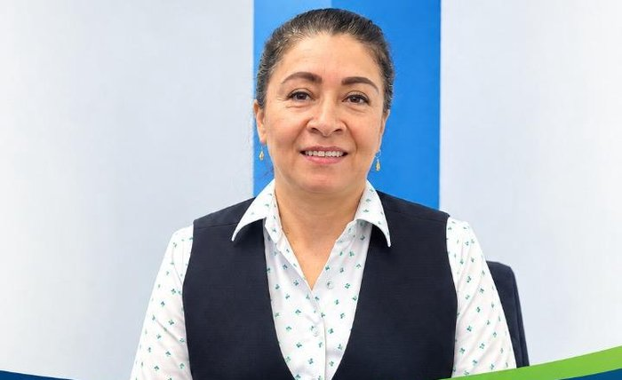
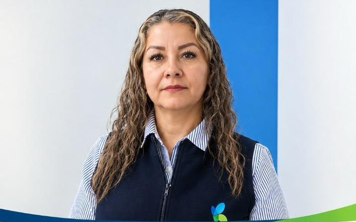

Regional con seguimiento activo a fondos de pensiones y comunicados propios de la ciudad.
Dirección: por confirmar.
Principales empresas donde trabajan: EPS Sanitas (18) · Centros Médicos Colsanitas (18).
Base de afiliados SINTRAOSI, septiembre de 2026.
Mónica María Hoyos Maya
El equipo que representa a los afiliados de SINTRAOSI en Medellín.


Comunicados y novedades publicadas específicamente para Medellín.